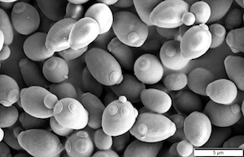

Research
Wittkopp Lab research (PostDoc)
The impact of mutation, selection, and drift on gene expression evolution
Variation in gene expression is a fundamental driver of phenotypic diversity both within and between species. New mutations with cis- and trans-acting effects on gene expression generate this variation, but it is also shaped by the action of natural selection. The relative influence of mutation, drift, and selection in shaping gene expression evolution remains difficult to disentangle. Realistic models describing the variation in gene expression expected in the absence of selection as well as when evolving on specific fitness landscapes are key steps toward achieving this goal. Generating such explicit models requires the understanding of the distribution of mutational effects on gene expression and the impact of this expression variation on fitness. A body of recent empirical work in Saccharomyces cerevisiae systematically characterizing the relative frequency and expression effects of thousands of cis- and trans-regulatory mutations altering expression of the TDH3 gene, as well as the impact of TDH3 expression variation on fitness in multiple environments provides just this type of data. Currently, I am using this information to build a realistic model of gene expression evolution, with individuals evolving on real fitness landscapes and mutational effects sampled from empirically derived distributions. By using this model to simulate the evolution of gene expression, I hope to reveal the impact of biases in the mutational spectrum, neutral processes, and natural selection on this quantitative trait.Reuter Lab research (PhD)
The geomic basis of sexual antagonism in Drosophila melanogaster
The divergent reproductive roles of males and females generate sexually antagonistic selection, with opposing trait values favoured in each sex. Responses to these selective pressures are however constrained by the sexes' shared genome, leading to 'sexual antagonism' (SA), where different alleles at given loci are favoured by selection in each sex. SA is widespread among animals and plants and imposes an important evolutionary constraint on adaptation. However, despite our increasing understanding of the taxonomic prevalence of SA and the traits affected, the genetic loci underlying this antagonism remain almost entirely unknown. To address this shortcoming I combined experimental evolution, next-generation sequencing and bionformatics in a bid to identify causal sexually antagonistic loci across the Drosophila melanogaster genome.
The evolution of polymorphic gene expression in regulatory networks under sexually antagonistic selection
The widespread occurrence of sexual antagonism is somewhat at odds with classical population genetic theory which suggests that the conditions for invasion and maintenance of antagonistic alleles are highly restrictive, particularly under weak selection. This disparity suggests that classic models do not adequately capture the properties of antagonistic alleles nor of the fitness landscapes on which they evolve. To address this, I am collaborating with Dr. Alex Stewart and Dr. Max Reuter to develop a detailed biophysical model for the action of sexually antagonistic selection on gene expression. This was motivated by the fact that gene regulation sits at the core of sexual dimorphism and has previously been associated with sexual antagonism. In addition, we have a detailed understanding of transcription factor binding, allowing us to construct realistic fitness landscapes. This framework will allow us to gain a better understanding of the conditions in which antagonistic alleles invade and are maintained by selection as well a generate more specific insights into the expected distribution of these loci across regulatory networks.